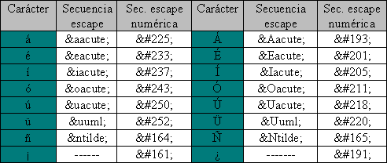

Referencias de entidades de caracteres HTML:
Los caracteres especiales HTML son una serie de códigos que sirven para traducir los diferentes caracteres que se utilizan en los alfabetos humanos para mostrarlos en los navegadores web. Esto es debido que los ordenadores solo utilizan números y no letras o símbolos. La necesidad de traducir los caracteres humanos a lenguaje binario no apareció con la llegada de internet. De hecho, su origen se remonta a los propios inicios de la informática.
Cuando escribimos un texto que va a ser visualizado en una página web, no escribimos solo el texto, sino que le añadimos una serie de fragmentos de código de manera que los navegadores puedan interpretar lo que queremos que se muestre. A continuación, vamos a ver un ejemplo: Si escribimos el código HTML
Quiero mostrar el símbolo del €
En pantalla aparece Quiero mostrar el símbolo del € En este caso, estamos utilizando dos caracteres especiales, la í (i minúscula con acento agudo) que se representa con la cadena í ; y el símbolo del € que se representa con la cadena €
Ejemplo:
Jorge Diaz 2021 © copyright, podemos ver el simbolo de registro calificado
